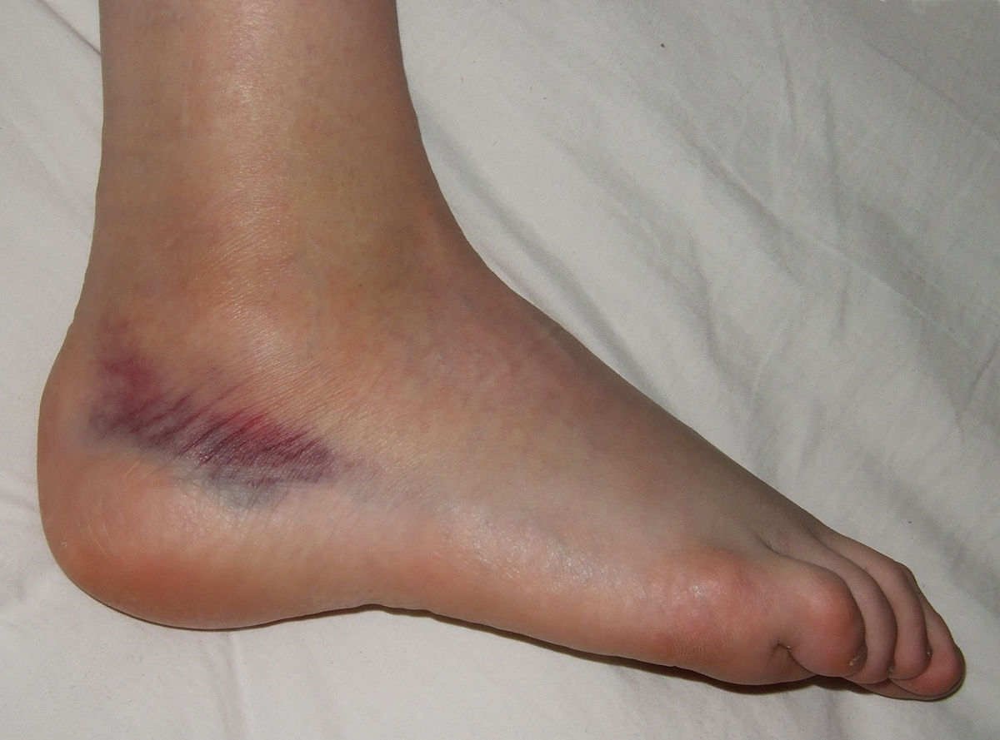

Sprained Ankle

CAUSES
Rolling or twisting the ankle causes ankle sprains. The most common ankle sprains are the result of:
- Falling or tripping on uneven surfaces.
-
Landing incorrectly after a jump.
-
Losing balance.
-
Participating in sports that involve rolling or twisting your foot (basketball, football, soccer, tennis).
SYMPTOMS
The symptoms of a sprained ankle include:
- Pain, especially when putting weight on your ankle.
-
Tenderness to the touch.
-
Swelling.
-
Bruising.
-
Difficulty walking.
DIAGNOSIS
Your healthcare provider will diagnose your sprained ankle after a physical examination of your foot and ankle to identify your range of motion and determine which ligaments are affected. The physical exam is typically followed by an imaging test, like an X-ray.
TREATMENTS
For the majority of ankle sprains, healthcare providers recommend using the PRICE method for the first 24-48 hours after injury. PRICE stands for protection, rest, ice, compression and elevation.
- Protection. Use crutches or apply a splint or brace to limit use of your injured ankle.
-
Rest. Limit physical activities that may cause stress to the sprain (no running, jumping, exercising).
-
Ice. Apply ice or a cold pack in a towel to your ankle in 20-minute increments to reduce swelling.
-
Compression. Gently wrap your ankle in an elastic bandage to help decrease swelling.
-
Elevation. Raise your ankle on pillows while you’re sitting or lying down so that it's higher than your heart.